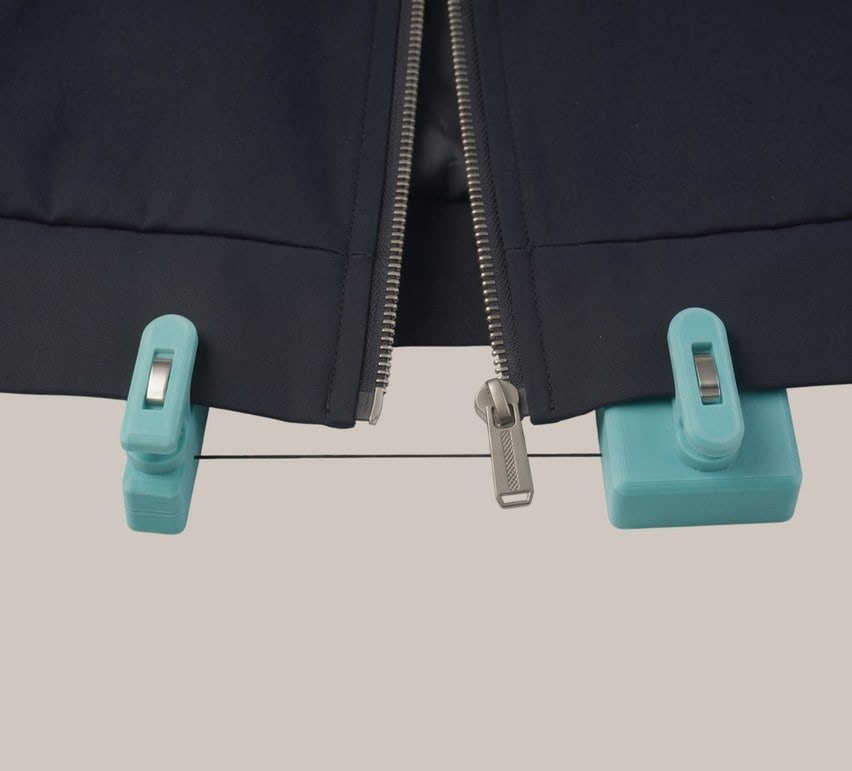
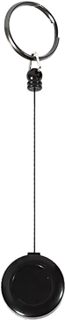
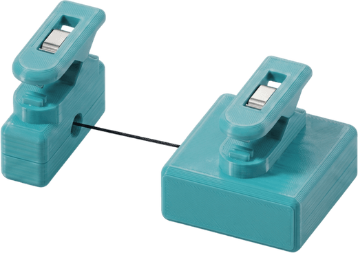
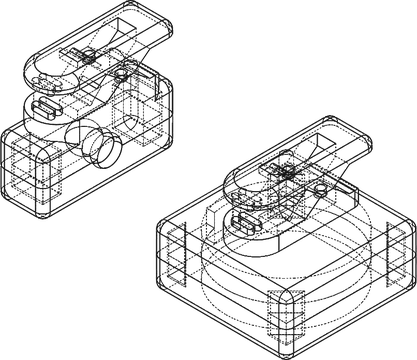

05
מכשיר עזר לסגירת רוכסן
עיצוב לנגישות | ארגונומיה


המוצר מחובר לשולי הבגד
ניסיון לחבר רוכסן ביד אחת


גלגלת משיכה ותופסנים
הבעיה
קושי לחבר רוכסן ביד אחת, לאנשים עם מוגבלות פיזית או ללא יד.
הפתרון
המוצר, בשילוב מנגנון "גלגלת משיכה" ותופסנים, מקרב בין שני צידי הבגד ומאפשר לחבר את הרוכסן ביד אחת.

הבעיה
קושי לחבר רוכסן ביד אחת, לאנשים עם מוגבלות פיזית או ללא יד.
הפתרון
המוצר, בשילוב מנגנון "גלגלת משיכה" ותופסנים, מקרב בין שני צידי הבגד ומאפשר לחבר את הרוכסן ביד אחת.
המוצר מחובר לשולי הבגד
ניסיון לחבר רוכסן ביד אחת
גלגלת משיכה ותופסנים